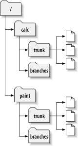

Centralized
Fork & Merge
Gitflow
yes, similar to Subversion

clone. code & commit. push.
git clone git@github.com:your_username/your_repo.gitgit add some_filegit commitgit push origin masterclone. code & commit. rebase. push.
git clone git@github.com:your_username/your_repo.gitgit add some_filegit commitgit pull --rebase origin mastergit push origin masterfork. clone. code & commit. push. pull request.
forking gives a "clean" environment
pull requests give a nice way to discuss code
forking is all done in a UI.
supported by: github, gitlab, stash/bitbucket
similar to central workflow, but with many different branches
master mirrors production
feature branches branch off of develop
release branches branch off of develop with features not yet in master
hotfix branches branch off of master
release branches merge back into master and develop
hotfix branches also merge back into master and develop
use what works best for _your_ development cycle
these workflows are guidelines, not strict rules
Gitflow
http://nvie.com/posts/a-successful-git-branching-model/
Atlassian git workflow tutorials
https://www.atlassian.com/git/tutorials/comparing-workflows/
Slides: http://drincruz.github.io/slides/git-workflow-comparison/#/